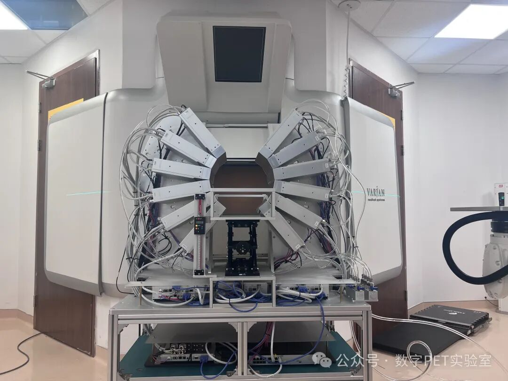
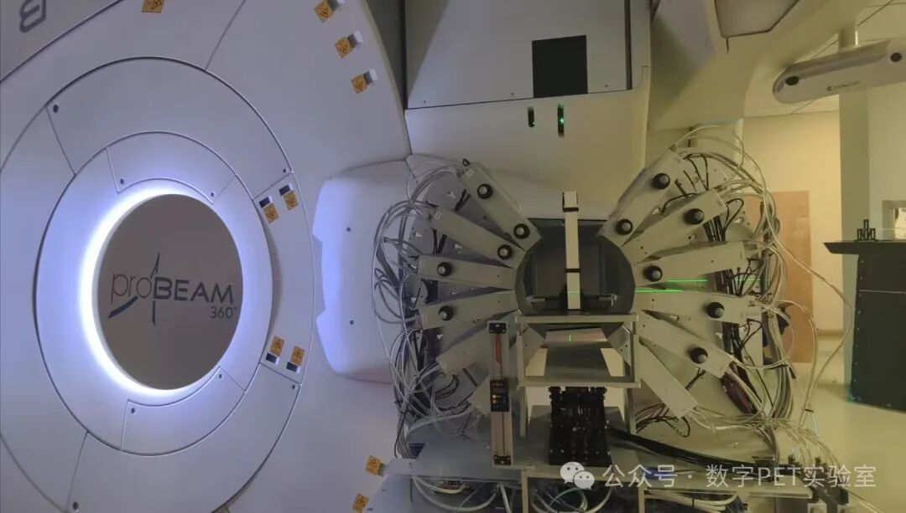
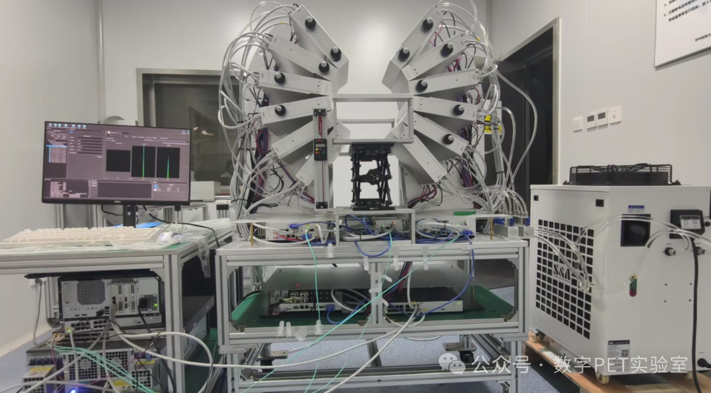
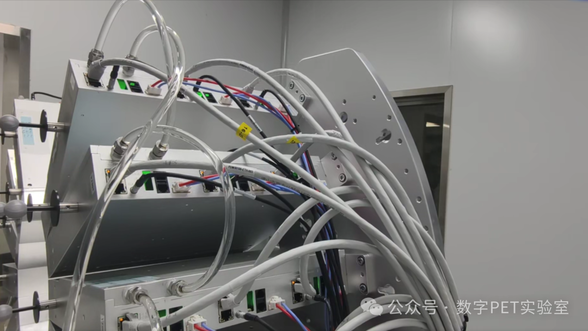
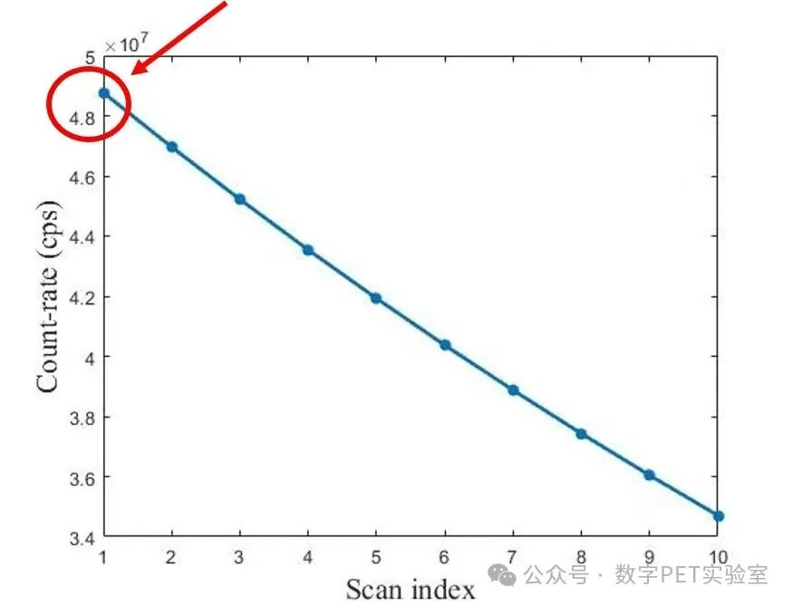
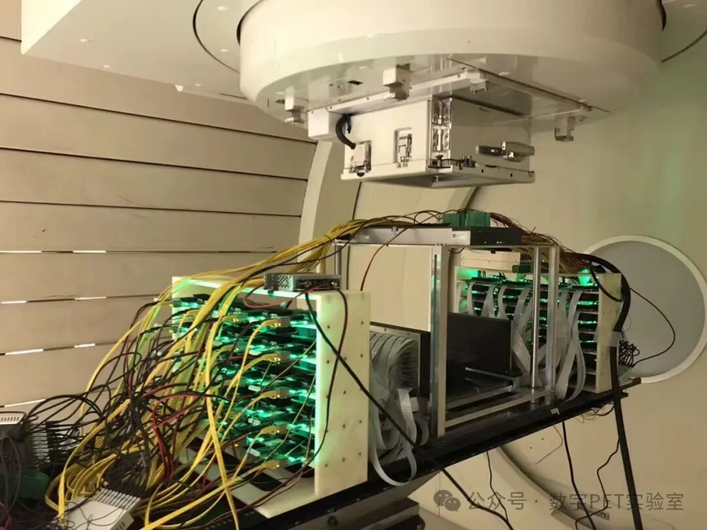
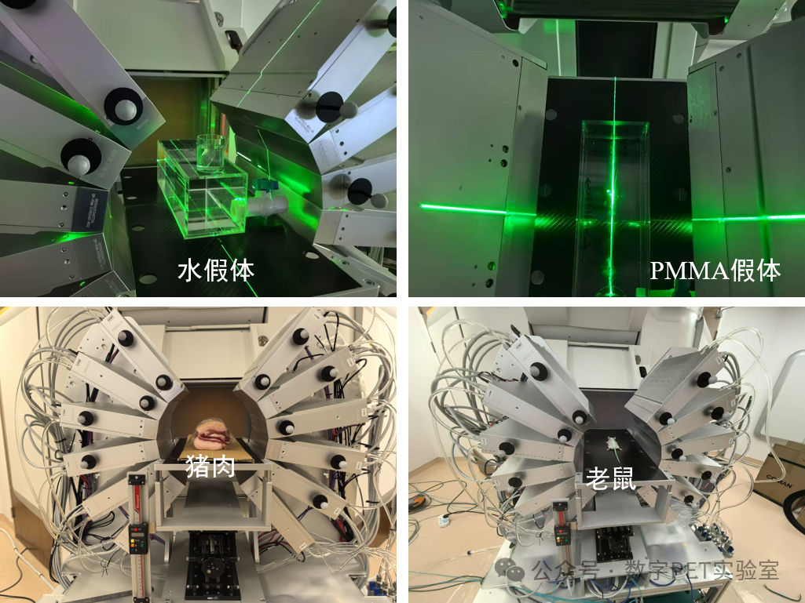
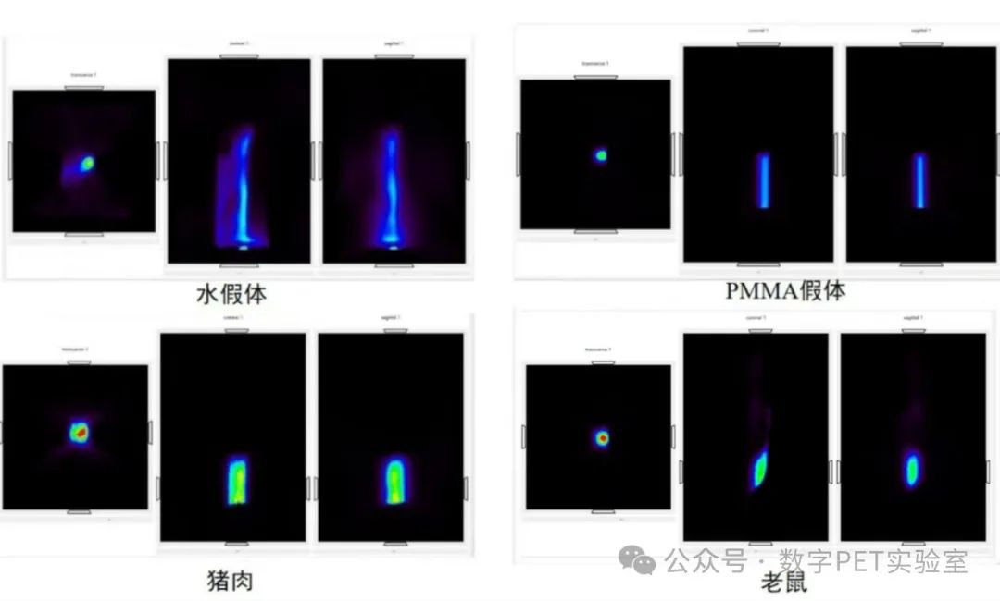
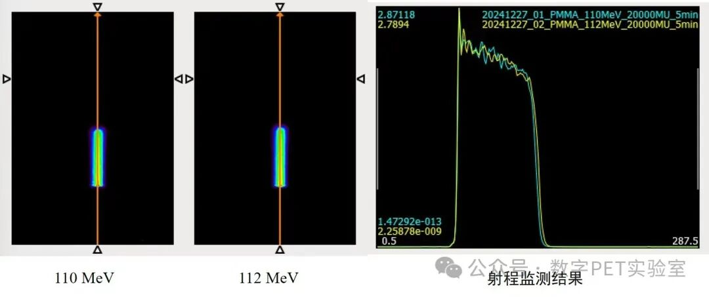
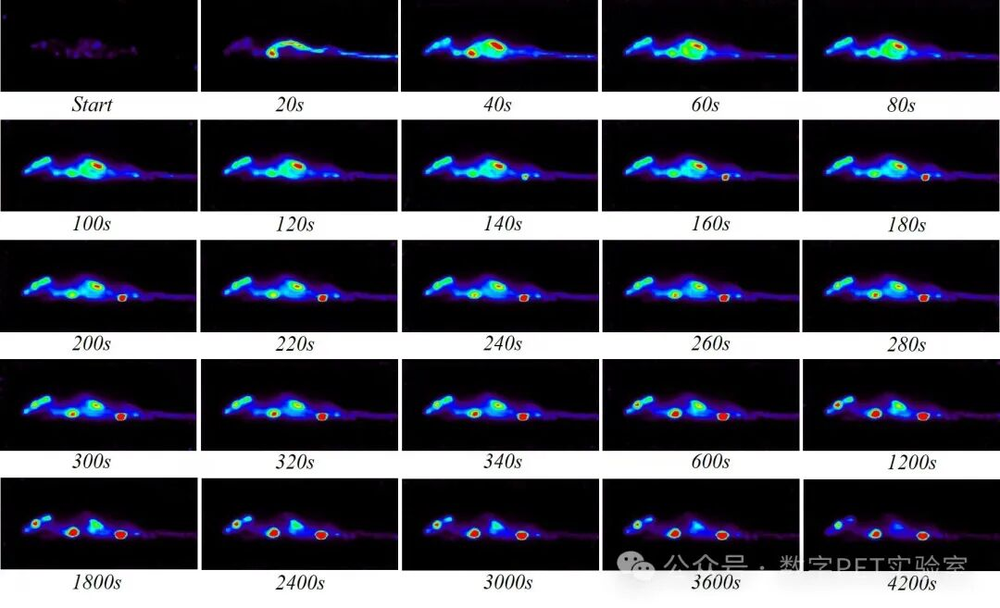

能“看见”质子束的数字PET装置来了！
数字PET团队自主创新的数字PET 2.0系统取得重要突破！
近日，由国家重大科研仪器项目所开发的质子束在生物组织内的能量输运观测装置（以下简称装置）研发成功，该装置先后安装在合肥离子医学中心和武汉协和医院质子医学中心，历经四年设备开发与临床前试验，成功实现了质子束诱导产生的正电子核素的三维动态分布和质子束射程的亚毫米在线监测，有望更清晰地“透视”质子束的打击广度和打击深度，从而更好地实现质子刀对肿瘤的精准治疗。


此次研制成功的质子束观测装置，由质子束诱导产生的次级粒子探测系统和数据处理工作站两大主体构成。

数字PETer、华中科技大学数字PET实验室博士生马秋慧介绍，该装置最突出的技术特点是高计数率。
依托多电压阈值（MVT）方法在信号源数字化方面的优势，装置最大计数率超过48 Mcps，能够更充分地捕获质子束诱发的正电子湮灭伽马信号。捕获这些信号，相当于追踪质子束在组织中的运动轨迹，为质子治疗束中在线监测提供了必要条件。


2018年，数字PET团队研发出全球首个面向质子治疗监测的双平板数字PET系统。此次研制的质子束观测装置，从2020年1月进入研发，历时4年多，于2024年12月初步完成研发。

与第一代原型机相比，新装置实现了全面升级与创新。在硬件方面，探测系统有效探测面积扩大至原来的3.5倍，获得了更高的计数率、更高的灵敏度以及更好的时空分辨率。
在软件上，面向质子治疗监测信号快速处理的需求，万琳教授带领软件组升级了即插即成像软件平台，该软件平台实现了基于GPU的脉冲重构、事件符合和图像重建等功能，完成了从数据采集到重建出图的“一键成像”。
从2020年执行项目任务以来，数字PETer的工作得到了武汉、合肥两地相关单位的大力支持。其中，武汉协和医院质子医学中心和合肥离子医学中心均投入大量人力物力，为数字PETer协调宝贵的实验场地和实验条件。数字PET团队与协和医院质子医学中心的张盛医生团队、杨志勇物理师团队，合肥离子医学中心的袁双虎医生团队、卢晓明物理师团队等，就质子束监测实验多次进行讨论，并共同制定实验所需的治疗计划。
目前，该装置已完成一系列设备调试和临床前测试，开展了质子束照射水模、PMMA模体、头模、猪肉及动物等实验。
这些实验成功实现了质子束诱发正电子核素三维动态分布及质子束程的亚毫米级在线监测，同时探索了质子治疗过程中的葡萄糖代谢变化，并分析了生物体内质子束生物冲刷效应。相关技术突破有望在质子放疗的剂量引导、生物引导、疗效评价及设备质量控制等方面发挥重要作用。




质子治疗被誉为肿瘤治疗的“利器”，代表着国际先进的肿瘤治疗技术。据相关统计，自1954年质子治疗首次用于临床以来，截至2021年底，全球接受质子治疗的患者已达28万人，占全部粒子治疗患者的86.2%；预计到2025年底，这一数字将增至35万人，显示出质子治疗技术正在快速普及并获得越来越广泛的临床认可。